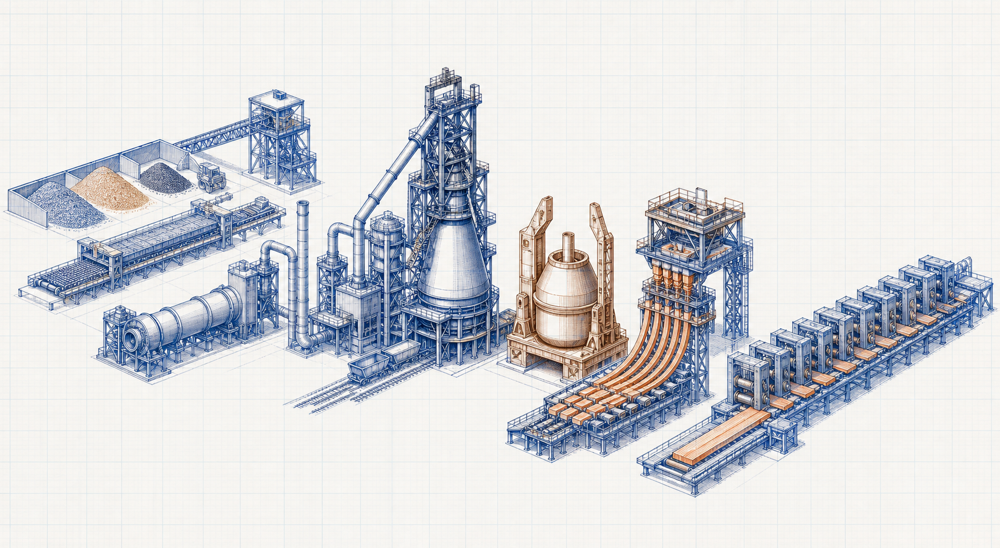

Steel-manufacturing process guide
Continuous Casting Process
Continuous Casting Process is an industrial process topic within Casting and Rolling. It explains the process purpose, major stages and operating considerations when the required duty is to prepare ferrous feed, produce steel, cast it and form it into required products.

- Content type
- Steel-manufacturing process guide
- Level
- Industrial Processes › Steel Manufacturing Process › Casting and Rolling › Continuous Casting › Continuous Casting Process
- Audience
- Student · Design engineer · Project engineer · Plant engineer
- Last reviewed
- 30 August 2026
What Is Continuous Casting Process?
Continuous Casting Process is an industrial process topic within Casting and Rolling. It explains the process purpose, major stages and operating considerations when the required duty is to prepare ferrous feed, produce steel, cast it and form it into required products.
Why Is It Important in Industrial Processes?
Continuous Casting Process must be assessed as part of the complete casting and rolling arrangement. The practical process result depends on the stated feed or energy basis, system boundary, equipment interfaces, operating conditions, controls and applicable project requirements.
Key Terms and Definitions
- Continuous Casting Process
- The specific industrial process subject defined by this page title.
- Continuous Casting
- The approved topic used to organise this guide.
- Casting and Rolling
- The process system that establishes the immediate operating context.
- Process basis
- The declared feed, duty, conditions, interfaces and requirements used for review.
Fundamental Process Principle
Continuous Casting Process must be assessed as part of the complete casting and rolling arrangement. The practical process result depends on the stated feed or energy basis, system boundary, equipment interfaces, operating conditions, controls and applicable project requirements.
Process Basis, Symbols and Units
Applicable process relationship
Use the documented method appropriate to the actual process and service.
Continuous Casting Process does not have one universal equation. Select verified mass, energy, hydraulic, heat-transfer, reaction or performance relationships that match the defined process configuration.
Unit consistency
Use one declared unit system and record the basis for flow, composition, temperature, pressure, energy, dimensions and measured operating data.
Assumptions and Validity Range
- The documented process arrangement represents the actual service.
- Inputs are traceable and compatible with the declared operating condition.
- Safety, emissions, supplier, code and project requirements are reviewed separately.
Factors Affecting Process Performance
Process basis
feed chemistry, temperature, production rate and the required steel grade
Equipment and interfaces
vessel, furnace, caster, rolling and gas-cleaning interfaces
Project constraints
refractory condition, water systems, process control, safety and environmental requirements
Step-by-Step Process Review Method
- Define the process boundary, required duty and operating envelope for Continuous Casting Process.
- Collect verified process data, drawings, feed or utility information, interfaces and relevant constraints.
- Select an applicable vendor, project or standards-based method for the actual process configuration.
- Review capacity, controllability, utilities, safety, emissions and operating limits on one consistent basis.
- Obtain qualified engineering review before detailed design, modification or operation.
Illustrative Process Review
Hypothetical example — not a design calculation
A project team checks whether a process option can meet the stated duty. It verifies the basis and interfaces, applies an appropriate documented method, and evaluates the outcome against operation, safety, maintenance and environmental constraints before taking the decision forward.
Industrial Applications
- Process-basis development and preliminary review for Continuous Casting Process.
- Cross-discipline coordination of process, mechanical, electrical, control, civil and environmental interfaces.
- Operations, inspection, troubleshooting and maintenance planning for the assigned plant system.
Common Mistakes and Limitations
- Using a generic process description without verifying actual operating conditions.
- Ignoring process, mechanical, electrical, control, civil, safety or environmental interfaces.
- Treating an educational article as an operating procedure, final design or compliance approval.
Frequently Asked Questions
Can this page be used as a final process design basis?
No. It is educational and preliminary reference material. Final decisions need verified project data, applicable requirements, supplier information and qualified engineering review.
What should be confirmed first?
Confirm the process boundary, feed or energy basis, operating conditions, required duty, interfaces and governing requirements.
Why are related resources included?
They provide the system context needed to avoid treating one process topic as an isolated design decision.
Expanded process guide
Continuous Casting Process: purpose, boundary and engineering basis
Continuous Casting Process is an industrial process topic within Casting and Rolling. It explains the process purpose, major stages and operating considerations when the required duty is to prepare ferrous feed, produce steel, cast it and form it into required products. In practice, the purpose of this steel-manufacturing process is to transform prepared raw materials or molten metal into controlled intermediate or finished steel while managing energy, chemistry, temperature, slag, gases, cooling and product quality. The final arrangement must be assessed against the actual operating duty, interfaces and project requirements rather than a generic flow diagram.
Start by defining the material or energy boundary, the required outcome, the normal and limiting operating cases, the quality or environmental target, and the owner of each interface. Record the source and date of the data used so that the process basis remains traceable when conditions change.
Process inputs and design basis
Feed and duty
Confirm raw-material chemistry, scrap or iron quality, flux, fuel, oxygen or electrical input, temperature, production rate, slag condition, cooling-water availability and quality target. Identify the source revision, measurement method and whether the value represents normal, maximum, minimum or upset operation.
Required outcome
Set the product, utility, discharge, emissions, recovery, storage or transfer requirement with an agreed acceptance basis.
Interfaces
Map upstream supply, utilities, controls, structural and access needs, downstream handling, residue routes and emergency isolation.
Governing case
Check which credible case controls capacity, quality, reliability, integrity, energy use, safety or environmental performance.
Typical process sequence
- Receive and validate the feed. Confirm actual condition, variability and hazards before the material or utility enters the process boundary.
- Establish a stable operating state. Align inventory, flow, temperature, pressure, level, draft or energy input before relying on performance data.
- Perform the principal unit operation. control reaction, melting or refining behaviour; document the intended mechanism, residence time or contact condition and its practical limits.
- Manage separation and recycle. separate slag, gas, dust or other by-products; prevent unwanted carryover, bypass, leakage, short circuiting or accumulation.
- Control quality and transfer. cast, cool, shape or roll the product and recover utilities and treat emissions or residues, with clear ownership for off-spec material or abnormal discharge.
- Protect people and assets. Provide alarm, trip, relief, isolation, ventilation, guarding and access measures appropriate to the hazards.
- Verify and improve. verify chemistry, temperature and dimensional quality; compare results with the approved basis and investigate meaningful deviations.
Operating controls and performance factors
The principal operating controls normally include feed mix, thermal input, oxygen or electrical power, bath or gas temperature, slag chemistry, pressure and draft, cooling-water flow, casting speed and product inspection. Their set points and alarm limits should be based on the process design basis, equipment limits, quality target and operating experience. A trend must be interpreted with its operating context: a change in flow, feed property, ambient condition or downstream restriction can explain a value that would otherwise appear abnormal.
Use an input–output balance where practical. Compare the quantity and condition entering the boundary with useful product, treated stream, loss, recycle and accumulated inventory. An unexplained imbalance may indicate measurement error, unrecorded bypass, leakage, sampling bias, carryover, incomplete reaction, moisture change or an incorrect boundary.
Instrumentation, sampling and control response
Measurement integrity
Locate sensors at representative points, confirm calibration and retain the unit, range, reference condition and date with the trend.
Sampling plan
Use defined points, representative duration and safe handling so that a laboratory or field result supports the actual operating decision.
Alarms and trips
Distinguish advisory alarms from protective actions, and provide an understood operator response for each credible abnormal condition.
Manual checks
Combine instrument trends with inspection for leakage, wear, vibration, deposition, discharge condition, access and housekeeping.
Start-up, shutdown and maintenance
Start-up should verify isolation status, correct line-up, utility availability, inventory, interlocks, protective equipment and readiness of downstream systems before introducing full duty. Increase load in a controlled manner and confirm expected trends after each change. Shutdown should leave material, pressure, temperature and electrical energy in a condition that can be safely isolated, inspected and restarted.
Plan maintenance around the components that determine containment, transfer, separation, heat or mass transfer, measurement, isolation and discharge. Include access, lifting, cleaning, spare parts, permits, lockout, confined-space controls and post-maintenance functional testing in the work scope.
Common performance problems
molten-material exposure, water ingress, pressure or gas release, refractory failure, dust and fume, moving equipment, crane interfaces, fire, explosion and high-energy electrical systems. Investigate the physical mechanism before changing a set point or replacing equipment. Verify the data boundary, inspect the affected route, compare the trend with process changes and test the most plausible cause using controlled evidence.
A useful troubleshooting record states the symptom, time, operating condition, affected equipment, relevant alarms, field observations, actions taken, outcome and remaining uncertainty. This supports repeatable learning rather than relying on memory after the event.
Limitations and engineering use
This page provides an educational framework. It does not define a complete P&ID, operating procedure, safety study, equipment guarantee, emissions demonstration, material specification or final design. Confirm applicable codes, permits, supplier information, hazard reviews and project documents before implementation.
Where a calculation, change or operating decision could affect safety, environmental compliance, containment, product quality or equipment integrity, obtain qualified review using current site-specific data.
Frequently asked questions
What should be established first?
Establish the actual boundary, service condition, required decision and governing case before using Continuous Casting Process.
Which data are essential?
Use current drawings, controlled records, representative measurements, relevant material or fluid information and the applicable project or standard basis.
Why is normal operation not enough?
Start-up, shutdown, minimum, maximum, maintenance, upset and future cases can reveal different controlling limits.
How should the result be verified?
Compare the process with independent inspection, calibrated measurements, current supplier information and the documented operating condition.
When is a repeat review needed?
Repeat the review after a material, load, configuration, equipment, control, route, standard or operating-procedure change.
Can this page approve final project work?
No. Final design, procurement, safety, code and compliance decisions require current project information and qualified professional review.
What should be retained in the record?
Retain sources, versions, assumptions, units, calculations, limitations, review actions and field-verification evidence.
How should uncertainty be handled?
Identify uncertainty explicitly, test important sensitivities and avoid reporting more precision than the input evidence supports.
Why involve operations and maintenance?
They identify practical limitations involving access, isolation, reliability, cleaning, availability and actual equipment behaviour.
What is a common error?
Mixing incompatible conditions, units, source revisions or boundaries is a common cause of misleading engineering conclusions.
What should follow implementation?
Confirm performance against the documented basis, close outstanding actions and reassess the conclusion if field evidence differs from expectation.
System-wide engineering
Lifecycle, interfaces and change control
A steel-manufacturing process must be reviewed as a connected operating system, not as isolated equipment. Changes in upstream feed, utility quality, throughput, environmental conditions or maintenance strategy can transfer a constraint to another part of the plant. Review capacity, pressure or energy margin, bypass arrangements, storage, residue handling, operator workload, controls, access and the ability to test performance after an outage or modification.
Upstream interface
Confirm that the source process supplies the expected quantity, condition and variability, including credible upset and start-up conditions.
Utilities and controls
Verify dependable power, air, water, steam, fuel, reagent, instrumentation and protective actions throughout the required operating envelope.
Downstream interface
Check product, treated stream, residue, discharge, storage and transport arrangements so that a local improvement does not create another bottleneck.
Assurance record
Retain the design basis, performance test, as-built configuration, operating limits, training requirements, inspection plan and management-of-change record.
Performance and reliability evidence
Define acceptance criteria before commissioning or changing the system. The test plan should identify measurement points, calibration, operating stability, test duration, calculation method, safe access and responsibilities. Trend the variables that explain both output and condition, such as flow, temperature, pressure loss, energy or reagent use, vibration, leakage, alarm activity, solids handling and maintenance interventions.
After an abnormal event, preserve relevant history, protect the safety boundary, inspect the physical failure path and confirm recovery under representative conditions. Use the findings to revise procedures, spare strategy, inspection frequency or the engineering basis where justified.
Operating decision framework
Process decisions, evidence and operating readiness
Engineering decisions should state the expected operating condition, the evidence used and the limit that would require action. A calculated capacity or an apparent trend is not enough when the process can be influenced by feed variation, weather, equipment condition, utility quality, downstream restriction or an unrecognised change in configuration. Build the decision around a clear boundary and confirm that the available data represent that boundary.
Evidence hierarchy
Controlled basis
Use current PFDs, P&IDs, data sheets, operating procedures, material specifications, cause-and-effect information and approved calculation records.
Measured condition
Use calibrated trends, laboratory results, field readings, inspection findings and maintenance history obtained under recorded operating conditions.
Independent check
Reconcile key conclusions with a balance, a second measurement, supplier limit, physical inspection or alternative calculation method.
Action record
Record the decision, uncertainty, safeguards, owner, due date and the test or inspection that will confirm the expected outcome.
Operating-envelope review
For each significant variable, define a normal band and a practical response threshold. Typical variables include flow, inventory, pressure, temperature, composition, moisture, utility demand, pressure loss, energy use, emissions or discharge quality, equipment speed and vibration. Consider whether the instrument location, range and calibration can distinguish a genuine process change from normal measurement noise.
Review the interaction between variables. A higher flow may reduce residence time, change pressure loss, reduce separation efficiency, increase entrainment, raise a pump or fan load, or overwhelm a downstream storage or treatment step. A local response can therefore move the constraint rather than resolve it. Test the complete process route before accepting a permanent change.
Preparation for abnormal conditions
Identify the early symptoms of loss of feed quality, utility interruption, high or low inventory, equipment degradation, fouling, blockage, leakage, loss of containment, incorrect line-up, instrument failure or loss of control. Provide a safe and understood response: stabilise the unit, protect people and equipment, isolate where necessary, notify affected interfaces and preserve evidence for investigation.
After an upset, do not return directly to normal duty solely because one indicator recovers. Verify the affected equipment, downstream route, inventory, protective function and quality or emissions condition. Record any temporary control changes and close them through the appropriate operating and change-management process.
Documentation for repeatable operation
A useful operating record identifies the design basis, normal and limiting cases, operating limits, alarm response, sampling and analysis method, maintenance tasks, spare strategy, inspection points and acceptance criteria. It helps new operators, reviewers and maintenance teams understand why the process is run in a particular way and makes later deviations easier to diagnose.
Major-system assurance
Integrated system performance and lifecycle control
Major industrial process systems must be evaluated as a lifecycle arrangement: design intent, construction quality, commissioning, normal operation, maintenance, upset response, environmental duty and eventual modification are connected. The most visible item of equipment rarely governs performance alone. Layout, gas or material distribution, utility reliability, access, storage, discharge paths, controls and operator actions may determine whether the intended process outcome is achieved consistently.
Interface checklist
Feed source
Confirm quantity, condition, composition, variability, contamination, temperature and credible upset behaviour from the upstream process.
Equipment train
Check capacity margin, bypasses, isolation, pressure or hydraulic balance, wear, fouling, heat loss, leakage, instrumentation and protective functions.
Utilities
Verify electrical power, compressed air, water, steam, fuel, reagent, cooling, drainage, ventilation and automation services under the controlling cases.
Discharge route
Confirm that product, treated stream, residue, ash, sludge, dust, gas or water can be safely contained, measured, stored and transferred.
Commissioning and acceptance evidence
Set measurable acceptance criteria before testing. State the operating condition, stabilisation period, sampling or measurement locations, calibration requirements, test duration, calculation method, data treatment, safe-access conditions and responsibility for witness and approval. Compare the result with the agreed design basis, supplier guarantee and applicable process, quality or environmental requirement.
Capture the as-built arrangement, set points, control logic, alarm limits, inspection findings, outstanding actions, training requirements and baseline operating trends. These records are essential when a later concern is caused by a change in feed, duty, fuel, material, component, operating method or environmental condition.
Reliability, maintenance and management of change
Use condition trends and field observations to plan maintenance before performance is lost. Include inspection for wear, corrosion, deposition, leakage, vibration, belt or chain condition, refractory or lining condition, bag or electrode condition, alignment, support movement, utility quality and residue discharge where relevant. Safe access, isolation, lifting, cleaning, permits and post-maintenance functional checks are part of process reliability, not secondary activities.
Apply management of change to material modifications, throughput increases, alternate fuels or feeds, route changes, software or set-point revisions, replacement equipment, temporary bypasses and revised maintenance strategies. Recheck the design and safety basis whenever a change could affect containment, emission, energy balance, equipment integrity, quality or the ability of operators to respond safely.
Major-process readiness
Capacity, availability and safe response
For a major process, capacity should be checked against the complete train, not only the rated central unit. Review the limiting upstream and downstream equipment, storage, conveying, gas or liquid route, utility supply, residue handling and operator response time. A capacity increase can require changes to pressure balance, heat removal, air or water demand, environmental control, protection settings, access and maintenance resources.
Define an availability strategy with critical spares, inspection frequency, condition indicators, planned outage tasks, bypass philosophy and a route for safe operation at reduced capacity. The plan should distinguish tolerable degradation from conditions that require immediate intervention. Retain baseline trends after commissioning so that changes in energy, pressure loss, temperature approach, emissions, vibration, quality or discharge behaviour can be interpreted early.
Emergency and abnormal-condition procedures should state the alarm cues, stabilising actions, isolation boundaries, communication steps, required personal protection and verification needed before restart. Review these procedures after incidents, modifications or changes in operating personnel. Safe, repeatable recovery is a core performance requirement for a system of this scale.
System lifecycle guide
Design intent through long-term operation
A major industrial process is successful only when its intended physical mechanism remains effective in real operation. That requires alignment between the process basis, equipment design, construction quality, control philosophy, operating practice and maintenance strategy. A correct equipment size can underperform when distribution, residence time, temperature, pressure, chemistry, moisture, utility quality, discharge capacity or human response differ from the assumed condition.
Establish a design-intent statement that links the required process outcome to measurable operating variables. It should state what enters the system, what transformation or separation is expected, the permitted outlet or product condition, normal and limiting cases, essential utilities, protective functions, residue or by-product route, and the evidence required to demonstrate performance. This creates a reference for commissioning, troubleshooting and future change decisions.
Capacity and bottleneck assessment
Assess capacity across the complete route. Start with the source condition and follow material, gas, liquid, heat and information flows through every critical interface. Check equipment turndown and maximum duty, storage and surge capability, pressure or hydraulic balance, heat-transfer margin, conveyor or pump availability, fan or compressor margin, treatment capacity, waste discharge and the ability to operate during maintenance. A bottleneck often appears at an interface rather than in the central vessel, kiln, furnace, collector, column or machine.
Evaluate the governing case explicitly. This may be peak throughput, high moisture, difficult chemistry, maximum ambient temperature, cold start, low load, utility loss, feed upset, one unit out of service, reduced residue handling or a restrictive emission or product-quality target. Record the case that controls each design or operating limit and avoid combining data from incompatible scenarios.
Control, safeguarding and human factors
Control loops should maintain stable operation, while alarms, trips, relief, isolation and permissives protect the process when normal control is insufficient. Review sensor location, instrument range, calibration, response time, failure mode, alarm priority, operator display and the action expected after an alarm. A well-designed safeguard can be weakened by poor installation, bypass management, unclear procedures or lack of testing.
Operators need practical indicators that connect the control-room trend with equipment condition. Include field rounds for leakage, odour, noise, vibration, deposition, abnormal temperature, level, pressure loss, discharge quality, utility use, drive condition, structural movement and access obstructions. Combine digital history with observation, maintenance feedback and sampling rather than depending on a single instrument.
Maintenance, inspection and spares
Prioritise components whose failure would interrupt containment, transfer, reaction, separation, heat exchange, measurement, isolation or environmental performance. For each critical item, define inspection method, acceptance limit, frequency, access requirement, isolation point, spare strategy, lead time, lifting or cleaning need and post-maintenance functional test. Consider wear, corrosion, erosion, fouling, fatigue, electrical degradation, refractory or lining condition, seal condition, filter or electrode condition, support integrity and residue buildup as relevant to the process.
Planned maintenance should be linked to condition evidence where possible. Unexpected failure history, high energy use, increasing pressure drop, emissions trend changes, vibration, temperature approach, repeated alarms or poorer quality can justify an earlier intervention. Complete work with a documented return-to-service check that confirms the line-up, protection, controls and affected interfaces are ready for duty.
Change management and continual learning
Reassess the process basis when feedstock, fuel, water quality, material grade, product specification, throughput, equipment geometry, software, set point, piping or duct routing, treatment chemistry, maintenance approach or operating procedure changes. Even a minor local change can alter flow distribution, pressure loss, heat balance, corrosion risk, emissions, residue handling or protective response elsewhere in the system.
After each significant event or modification, compare actual performance with the documented basis. Record what changed, why it changed, the evidence reviewed, the temporary and permanent actions, remaining uncertainty and the confirmation required for close-out. This disciplined feedback loop protects technical knowledge and improves reliability over the life of the process.
References
- Fruehan, R. J. The Making, Shaping and Treating of Steel. AISE Steel Foundation.
- World Steel Association. Steel Statistical Yearbook. worldsteel.
This is an original educational summary and does not reproduce protected book text, tables, figures or standards material.